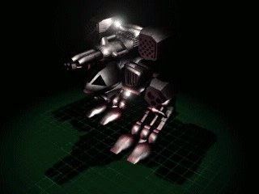

Exterminator

In-game info panel
- Speed:
- 100 km/h
- Energy (HP):
- 2250
- Sight range:
- 550 m
- Production time:
- 91 s
| Weapon | Power | Range | Targets |
|---|---|---|---|
| Ion Gun | 48 | 1-10 | G |
| Ion Cannon | 600 | 1-15 | G |
| Humming-bird Rocket | 125 | 2-10 | A |
| Low-calibre Gun | 12 | 1-6 | GA |
Costs: Extract 6000 Iron 3500 Carbon 4000 Titanium 3000
Description
Probably the most perfectly designed human defensive and offensive weapon. Due to its amazing capabilities it's called "the sweeper" in army slang. Design and construction based on the most modern military ion technology. Utilized above all for the final assault on enemy units and structures. Thanks to its hummingbird ion rockets, long-range ion cannon, ion guns and an assault cannon, it can combat both air and ground units. Its very expensive to produce but also difficult to destroy.
Related
- Requires
- Pioneer, Mega Factory, Exterminator
- Researched by project
- Exterminator
- Produced by
- Mega Factory
- Transported by
- Galaxy AA3
- Weapons
- Ion Gun (slot 0), Ion Cannon (slot 1), Humming-bird Rocket (slot 2), Low-calibre Gun (slot 3)
- Upgraded by
- Titan Armour, Ion Servo Pro
Config values not shown in game (8)
HUMAN- 2
TRACE- 1
AILEVEL- 1
TURN_SPEED- 0.016
AIUNIT- AIUNIT_WALKER
SOLDIER_TYPE- SOLDIERTYPE_UNKNOWN
INDEPENDENT- nigdy
TYPE- R_hWALKER